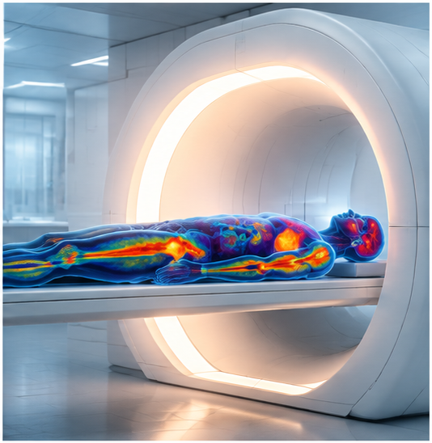

Total-Body PET Imaging
We develop methods that exploit the high sensitivity and extended axial field of view of total-body PET systems.
Our work focuses on improving image quality, reducing radiation dose, and enabling new quantitative imaging applications.